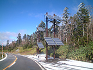

KozzyCorner へようこそWelcome to KozzyCorner Site
コンセプトConcept

ガジェット好きな爺が、これからの人生をどう生きるか！！
を、テーマにこのコーナーを進めていこうと思っています（今の所）。
レスポンシブに対応していないので対応できるよう奮闘中です
CMSにも対応しメンテナンスを楽になるよう勉強中です
（CMS化すればレスポンシブも同時に解決はするんですが）
※ガジェットとは「目新しい道具」「面白い小物」といった意味を持つが、主に携帯用のデジタル機器類を意味し
これに特に深い造詣を持っている。
※特に好きなものは同じものを幾つも欲する癖あり。また特に好きなものも沢山ある。
コラムColumn
今年の宝達山は更にフジバカマの植栽の地域を広げておりました。
本来、宝達山に飛来するアサギマダラは主に自然にあるアザミの花に訪花していました。が、白山方面で絶滅危惧種のフジバカマを守るを前提に沢山の植栽園を作っていき、
北からのアサギマダラが宝達山を通過して白山に向かっているかのように思われ、宝達山にも植栽するようになりました。
確かにアサギマダラはフジバカマの蜜が大好物ですので、アザミとフジバカマでは競争になりません。でも自然の法則に逆らってマーキング主体での植栽はアサギはどう思っているのでしょうか。
2022年11月
再捕獲情報Recapture

新着情報News
- 2022.12.26
- 「FIPRIN」サンキュー クーポン券ゲットで、再度購入しました。NEW!
- 2022.12.25
- ビックカメラでSUDIO NIO購入 4色目となりました。
- 2022.12.24
- 当ホームページがリニューアルオープンいたしました。
- 2022.12.22
- 宝達志水病院で脳のMRIをとりました。
- 2022.12.12
- 門松をつくりました(MRIをとる原因にもなりました)。
- 2022.12.08
- 中国政府ゼロコロナ対策終了。中国国内における爆発的なコロナ感染の予兆の始まりを迎える。
- 2022.12.01
- 乗用車（アコードHV）売却しました。